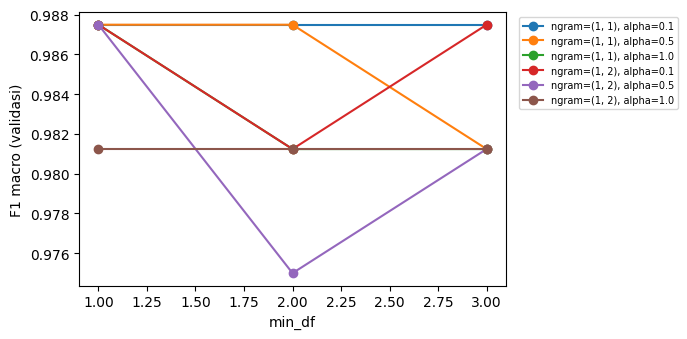
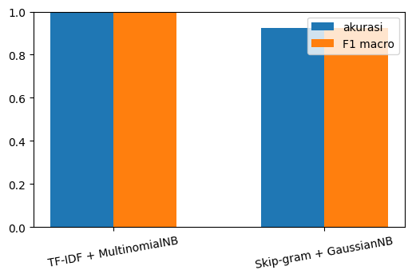
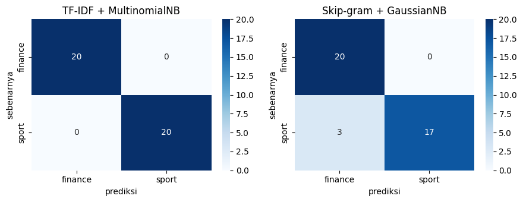

Modeling: TF-IDF vs Skip-gram#
Notebook ini adalah kelanjutan dari Tugas 2 (Text Preprocessing). Dari
data/dataset_berita_detik.csv (200 artikel, 100 berlabel sport dan 100
berlabel finance), teks dibersihkan ulang secara lengkap, lalu diubah
menjadi dua representasi angka yang berbeda cara kerjanya:
TF-IDF — pendekatan berbasis hitungan kata. Setiap kata diberi bobot sesuai seberapa khas kemunculannya di satu dokumen dibanding dokumen lain.
Skip-gram (Word2Vec) — pendekatan berbasis makna. Model belajar memprediksi kata-kata di sekitar sebuah kata, sehingga kata yang sering muncul pada konteks mirip mendapat vektor yang berdekatan.
Kedua representasi dipasangkan dengan Naive Bayes, parameter masing-masing
dicari lewat Grid Search (pencarian kombinasi parameter secara sistematis,
diuji dengan cross-validation), lalu performanya dibandingkan di data uji yang
sama persis. Model dengan hasil terbaik disimpan ke berkas .joblib supaya
bisa dipakai ulang tanpa melatih dari awal.
Alur notebook:
Data → Cleaning → Split → TF-IDF + Grid Search → Skip-gram + Grid Search → Evaluation → Model Selection → Save Model → Conclusion
Data Loading#
Dataset dimuat dari data/dataset_berita_detik.csv. Sebelum masuk ke
pembersihan, sebaran label diperiksa untuk memastikan data masih seimbang
seperti saat dikumpulkan di Tugas 1. Keseimbangan ini penting karena kalau satu
label jauh lebih banyak, model bisa “curang” dengan menebak label mayoritas
terus-menerus dan tetap terlihat akurat.
%pip install pandas matplotlib seaborn scikit-learn scipy Sastrawi indoNLP gensim joblib -q
Note: you may need to restart the kernel to use updated packages.
import pandas as pd
df = pd.read_csv("dataset_berita_detik.csv")
pd.DataFrame({
"metrik": ["jumlah artikel", "label unik", "sport", "finance"],
"nilai": [len(df), df["label"].nunique(),
(df["label"] == "sport").sum(),
(df["label"] == "finance").sum()],
})
| metrik | nilai | |
|---|---|---|
| 0 | jumlah artikel | 200 |
| 1 | label unik | 2 |
| 2 | sport | 100 |
| 3 | finance | 100 |
Text Cleaning#
Teks mentah dari hasil crawling detik.com masih membawa banyak hal yang bukan isi berita sebenarnya: sisa antarmuka situs, tanda baca, angka, kata tidak baku, dan variasi bentuk kata (imbuhan). Kalau dibiarkan, hal-hal ini menambah kosakata secara tidak perlu dan membuat model sulit menemukan pola yang sebenarnya membedakan sport dari finance.
Pembersihan dilakukan dalam tujuh langkah berurutan, masing-masing dijelaskan di bagian tersendiri di bawah supaya alasan setiap langkah jelas:
Site Boilerplate Removal - buang sisa antarmuka situs.
Format Protection - lindungi URL, nominal uang, kode berangka, angka Romawi dari ikut terpotong.
Letter Normalization - samakan huruf beraksen ke bentuk ASCII biasa.
Slang Standardization - bakukan kata tidak baku, kecuali nama diri.
Punctuation & Number Stripping - buang tanda baca, angka, token terlalu pendek.
Stopword Removal - buang kata umum yang tidak membedakan topik.
Stemming with Name Protection - potong ke kata dasar, kecuali nama diri.
Site Boilerplate Removal#
Setiap artikel diakhiri frasa tetap Anda menyukai artikel ini Artikel disimpan, kadang didahului kode redaksi dalam kurung seperti (krs/nds).
Artikel foto juga diawali Foto Sport atau Foto Finance, kata yang sama
persis dengan nama label, sehingga kalau tidak dibuang justru bisa menjadi
petunjuk palsu yang membuat model terlihat pintar padahal hanya mengenali
kata label itu sendiri. Bagian-bagian ini dibuang lebih dulu sebelum langkah
lainnya.
import re
byline_re = r"\(\w{2,6}(?:/\w{2,6})+\)"
boiler_re = rf"(?:{byline_re}\s*)?Anda menyukai artikel ini\s+Artikel disimpan\s*$"
photo_re = r"^Foto\s+(?:Sport|Finance)\s+"
def strip_boilerplate(text):
text = re.sub(photo_re, "", text)
return re.sub(boiler_re, "", text).strip()
texts_clean = df["isi_berita"].map(strip_boilerplate)
pd.DataFrame({
"id": df["id"].head(2),
"sebelum (akhir teks)": df["isi_berita"].head(2).str[-60:],
"sesudah (akhir teks)": texts_clean.head(2).str[-60:],
})
| id | sebelum (akhir teks) | sesudah (akhir teks) | |
|---|---|---|---|
| 0 | 1 | 1 poin. (krs/nds) Anda menyukai artikel ini Ar... | ara Marco Bezzecchi berada di posisi ketiga de... |
| 1 | 2 | engejar prestasi. Anda menyukai artikel ini Ar... | enguatan fisik menjadi bagian dari proses meng... |
Format Protection#
Sebelum tanda baca dan angka dibuang total, beberapa pola justru perlu dilindungi utuh supaya nilainya tidak hancur jadi token acak:
URL (
https://...,pic.twitter.com/...) — kalau tidak dibuang sekaligus, sisa potongannya (misalnyasport,detik,com) akan ikut terhitung sebagai kata biasa dan mencemari kosakata.Nominal uang (
Rp1.000.000,US$500) — penting secara makna untuk berita finance, tapi angkanya tidak berguna sebagai kata, jadi seluruh pola dibuang bersama simbolnya daripada dipotong setengah-setengah.Kode alfanumerik (
RS-GP26,3x3) — gabungan huruf dan angka seperti ini, kalau hanya tanda baca yang dibuang, akan menyisakan pecahan aneh sepertirsdangp.Angka Romawi (
II,III) — sering muncul sebagai penomoran, bukan kata yang bermakna.
Keempatnya dicari dan dibuang (diganti spasi) sebelum tanda baca biasa diproses, supaya yang tersisa untuk langkah tanda-baca hanyalah kata murni.
url_pattern = re.compile(r"(?:https?://|www\.|pic\.twitter\.com/)\S+")
alnum_pattern = re.compile(r"\b(?=[A-Za-z]*\d)[A-Za-z0-9][A-Za-z0-9.*-]*\b")
currency_pattern = re.compile(
r"\bRp\d[\d.,]*\b|\bUS\$\d[\d.,]*\b|\b\$\d[\d.,]*\b|\bRp\b|\bUS\$\b")
roman_pattern = re.compile(
r"\b(?:iii|iv|vi{0,3}|i[ivx]{0,2}|v|x{1,3}|xi{0,3})\b", re.IGNORECASE)
def protect(text):
text = url_pattern.sub(" ", text)
text = currency_pattern.sub(" ", text)
text = alnum_pattern.sub(" ", text)
text = roman_pattern.sub(" ", text)
return text
n_url = sum(len(url_pattern.findall(t)) for t in texts_clean)
n_curr = sum(len(currency_pattern.findall(t)) for t in texts_clean)
n_alnum = sum(len(alnum_pattern.findall(t)) for t in texts_clean)
n_roman = sum(len(roman_pattern.findall(t)) for t in texts_clean)
pd.DataFrame({
"pola": ["URL", "nominal uang", "kode alfanumerik", "angka Romawi"],
"jumlah ditemukan": [n_url, n_curr, n_alnum, n_roman],
})
| pola | jumlah ditemukan | |
|---|---|---|
| 0 | URL | 4 |
| 1 | nominal uang | 225 |
| 2 | kode alfanumerik | 3508 |
| 3 | angka Romawi | 56 |
Letter Normalization#
Sebagian nama hasil transliterasi atau tanda baca sumber bisa memuat karakter di luar huruf ASCII biasa (misalnya huruf beraksen atau tanda hubung khusus). Kalau dibiarkan, karakter semacam ini akan dibuang begitu saja pada langkah tanda-baca, membuat kata jadi terpotong aneh. Karakter aksen dilebur ke huruf dasarnya terlebih dulu (misalnya menjadi huruf biasa), dan varian tanda hubung disamakan ke tanda hubung standar.
import unicodedata
def normalize_letters(text):
decomposed = unicodedata.normalize("NFD", text)
text = "".join(c for c in decomposed if not unicodedata.combining(c))
return text.replace("\u2011", "-").replace("\u2010", "-")
non_ascii_before = sum(any(ord(c) > 127 for c in t) for t in texts_clean)
after_normalize = [normalize_letters(protect(t)) for t in texts_clean]
non_ascii_after = sum(any(ord(c) > 127 for c in t) for t in after_normalize)
pd.DataFrame({
"tahap": ["sebelum normalisasi", "sesudah normalisasi"],
"artikel dengan karakter non-ASCII": [non_ascii_before, non_ascii_after],
})
| tahap | artikel dengan karakter non-ASCII | |
|---|---|---|
| 0 | sebelum normalisasi | 4 |
| 1 | sesudah normalisasi | 4 |
Slang Standardization#
Bahasa berita daring sering menyelipkan kata tidak baku atau singkatan
informal. Kamus indoNLP (replace_slang) dipakai untuk membakukan kata
semacam itu ke bentuk standarnya. Tapi kamus ini tidak tahu konteks, bisa saja
sebuah nama orang kebetulan mirip entri slang. Supaya nama tidak ikut
berubah, sebuah kata hanya dibakukan kalau semua syarat berikut terpenuhi:
bukan termasuk daftar pengecualian manual (
excluded_slang),tidak berdekatan dengan angka (tanda itu biasanya kode, bukan kata biasa),
tidak terlihat seperti nama diri (diawali kapital di tengah kalimat, atau memuat huruf kapital di tengah kata),
bukan token dua huruf yang sebenarnya kata fungsi valid.
Daftar excluded_slang berisi kata yang terbukti dari tahap sebelumnya rawan
salah ubah; nilainya hasil pemeriksaan manual pada dataset Anda, bukan
tebakan.
from indoNLP.preprocessing import replace_slang
from collections import Counter
def mid_sentence(text, pos):
i = pos - 1
while i >= 0 and text[i] in ' \n\t"\'":(':
i -= 1
return i >= 0 and text[i] not in '.!?;:(\u2013\u2014'
excluded_slang = {"minta", "pala", "fans"}
slang_changes = Counter()
def guarded_replace(text):
changes = []
for m in re.finditer(r"[A-Za-z]+", text):
w = m.group(0)
repl = replace_slang(w.lower())
if repl == w.lower() or w.lower() in excluded_slang:
continue
before = text[max(0, m.start() - 6):m.start()]
after = text[m.end():m.end() + 6]
near_digit = bool(re.search(r"\d", before + after))
looks_name = (w.isupper() or any(c.isupper() for c in w[1:])
or (w[:1].isupper() and w[1:].islower()
and mid_sentence(text, m.start())))
two_letter = len(w) <= 2 and w.lower() not in id_stopwords_preview
if not (near_digit or looks_name or two_letter):
changes.append((m.start(), m.end(), repl))
slang_changes[w.lower()] += 1
out = list(text)
for s, e, r in reversed(changes):
out[s:e] = list(r)
return "".join(out)
from Sastrawi.StopWordRemover.StopWordRemoverFactory import StopWordRemoverFactory
id_stopwords_preview = set(StopWordRemoverFactory().get_stop_words())
after_slang = [guarded_replace(t) for t in after_normalize]
pd.DataFrame([{"kata asli": w, "padanan baku": replace_slang(w),
"kemunculan diubah": n}
for w, n in slang_changes.most_common(10)])
| kata asli | padanan baku | kemunculan diubah | |
|---|---|---|---|
| 0 | nggak | enggak | 34 |
| 1 | gitu | begitu | 10 |
| 2 | udah | sudah | 9 |
| 3 | kaya | kayak | 7 |
| 4 | hub | hubungan | 4 |
| 5 | gimana | bagaimana | 3 |
| 6 | slam | salam | 3 |
| 7 | aja | saja | 3 |
| 8 | ngomong | mengomong | 2 |
| 9 | ngantri | mengantri | 2 |
Punctuation & Number Stripping#
Setelah pola-pola penting dilindungi dan kata dibakukan, barulah seluruh tanda baca dan angka yang tersisa dibuang kasar, diganti spasi. Token yang tersisa di bawah dua huruf juga dibuang, karena pada tahap eksplorasi sebelumnya token sependek itu terbukti nyaris selalu berupa pecahan kata, bukan kata utuh yang bermakna.
def strip_punct(text):
text = re.sub(r"[^A-Za-z\s-]", " ", text)
text = re.sub(r"-+", " ", text)
return [w for w in text.split() if len(w) >= 2]
tokens_stage1 = [strip_punct(t) for t in after_slang]
pd.DataFrame({
"metrik": ["token total", "kata unik"],
"nilai": [sum(len(d) for d in tokens_stage1),
len({w.lower() for d in tokens_stage1 for w in d})],
})
| metrik | nilai | |
|---|---|---|
| 0 | token total | 64262 |
| 1 | kata unik | 7238 |
Stopword Removal#
Stopword adalah kata fungsi yang muncul di hampir semua dokumen tanpa membawa makna topik, misalnya yang, di, dan, untuk. Kata semacam ini hadir rata di berita sport maupun finance, sehingga tidak membantu model membedakan keduanya, justru hanya menambah ukuran kosakata. Daftar stopword Sastrawi dipakai untuk membuang kata-kata ini.
tokens_stage2 = [[w for w in d if w.lower() not in id_stopwords_preview]
for d in tokens_stage1]
removed_stopwords = Counter(
w.lower() for d in tokens_stage1 for w in d
if w.lower() in id_stopwords_preview)
pd.DataFrame({
"metrik": ["token sebelum", "token sesudah", "stopword dibuang"],
"nilai": [sum(len(d) for d in tokens_stage1),
sum(len(d) for d in tokens_stage2),
sum(removed_stopwords.values())],
})
| metrik | nilai | |
|---|---|---|
| 0 | token sebelum | 64262 |
| 1 | token sesudah | 48498 |
| 2 | stopword dibuang | 15764 |
Name Protection#
Sebelum stemming (pemotongan ke kata dasar) dijalankan, nama diri perlu diamankan lebih dulu. Stemmer tidak tahu mana nama orang dan mana kata biasa; tanpa perlindungan, nama bisa berubah bentuk (misalnya nama yang kebetulan mirip pola imbuhan Indonesia ikut terpotong), padahal nama seharusnya tidak pernah diubah.
Kata diperlakukan sebagai nama diri kalau terdeteksi berulang kali ditulis berkapital di tengah kalimat (bukan di awal kalimat, karena awal kalimat selalu berkapital terlepas dari jenis katanya). Ambang yang dipakai: minimal lima kemunculan berkapital tengah kalimat, dan proporsi kemunculan berkapital itu minimal separuh dari seluruh kemunculan kata tersebut (supaya kata biasa yang sesekali mengawali kalimat tidak ikut salah dianggap nama).
name_counts = Counter()
raw_counts = Counter()
for text in after_slang:
for m in re.finditer(r"[A-Za-z]+", text):
w = m.group(0)
raw_counts[w.lower()] += 1
if len(w) >= 3 and w[0].isupper() and mid_sentence(text, m.start()):
name_counts[w.lower()] += 1
protected_names = {w for w, n in name_counts.items()
if n >= 5 and n >= 0.5 * raw_counts[w]}
pd.DataFrame([{"nama": w, "kemunculan berkapital": name_counts[w],
"total kemunculan": raw_counts[w]}
for w in sorted(protected_names,
key=lambda w: -name_counts[w])[:10]])
| nama | kemunculan berkapital | total kemunculan | |
|---|---|---|---|
| 0 | indonesia | 346 | 361 |
| 1 | jakarta | 280 | 288 |
| 2 | motogp | 167 | 185 |
| 3 | marquez | 140 | 163 |
| 4 | games | 127 | 129 |
| 5 | asian | 106 | 116 |
| 6 | purbaya | 97 | 105 |
| 7 | prabowo | 94 | 116 |
| 8 | marino | 92 | 92 |
| 9 | san | 92 | 93 |
Stemming#
Stemming memotong imbuhan supaya kata sekeluarga kembali ke bentuk dasar,
misalnya menambahkan menjadi tambah, atau pertandingan menjadi tanding.
Tujuannya supaya variasi bentuk kata yang sebenarnya satu makna tidak dihitung
sebagai kata yang berbeda-beda. Kata yang sudah ditandai sebagai nama diri
dilewati dari proses ini dan tetap dalam bentuk aslinya.
from functools import lru_cache
from Sastrawi.Stemmer.StemmerFactory import StemmerFactory
from Sastrawi.Stemmer.Stemmer import Stemmer
from Sastrawi.Dictionary.ArrayDictionary import ArrayDictionary
stemmer = Stemmer(ArrayDictionary(StemmerFactory().get_words()))
@lru_cache(maxsize=None)
def stem_word(token):
return stemmer.stem(token)
def stem_tokens(tokens):
return [w.lower() if w.lower() in protected_names else stem_word(w.lower())
for w in tokens]
docs_tokens = [stem_tokens(d) for d in tokens_stage2]
pd.DataFrame({
"metrik": ["token total", "kata unik sebelum stem", "kata unik sesudah stem"],
"nilai": [sum(len(d) for d in docs_tokens),
len({w.lower() for d in tokens_stage2 for w in d}),
len({w for d in docs_tokens for w in d})],
})
---------------------------------------------------------------------------
KeyboardInterrupt Traceback (most recent call last)
Cell In[11], line 19
14 def stem_tokens(tokens):
15 return [w.lower() if w.lower() in protected_names else stem_word(w.lower())
16 for w in tokens]
---> 19 docs_tokens = [stem_tokens(d) for d in tokens_stage2]
21 pd.DataFrame({
22 "metrik": ["token total", "kata unik sebelum stem", "kata unik sesudah stem"],
23 "nilai": [sum(len(d) for d in docs_tokens),
24 len({w.lower() for d in tokens_stage2 for w in d}),
25 len({w for d in docs_tokens for w in d})],
26 })
Cell In[11], line 19, in <listcomp>(.0)
14 def stem_tokens(tokens):
15 return [w.lower() if w.lower() in protected_names else stem_word(w.lower())
16 for w in tokens]
---> 19 docs_tokens = [stem_tokens(d) for d in tokens_stage2]
21 pd.DataFrame({
22 "metrik": ["token total", "kata unik sebelum stem", "kata unik sesudah stem"],
23 "nilai": [sum(len(d) for d in docs_tokens),
24 len({w.lower() for d in tokens_stage2 for w in d}),
25 len({w for d in docs_tokens for w in d})],
26 })
Cell In[11], line 15, in stem_tokens(tokens)
14 def stem_tokens(tokens):
---> 15 return [w.lower() if w.lower() in protected_names else stem_word(w.lower())
16 for w in tokens]
Cell In[11], line 15, in <listcomp>(.0)
14 def stem_tokens(tokens):
---> 15 return [w.lower() if w.lower() in protected_names else stem_word(w.lower())
16 for w in tokens]
Cell In[11], line 11, in stem_word(token)
9 @lru_cache(maxsize=None)
10 def stem_word(token):
---> 11 return stemmer.stem(token)
File /opt/hostedtoolcache/Python/3.10.22/x64/lib/python3.10/site-packages/Sastrawi/Stemmer/Stemmer.py:27, in Stemmer.stem(self, text)
24 stems = []
26 for word in words:
---> 27 stems.append(self.stem_word(word))
29 return ' '.join(stems)
File /opt/hostedtoolcache/Python/3.10.22/x64/lib/python3.10/site-packages/Sastrawi/Stemmer/Stemmer.py:36, in Stemmer.stem_word(self, word)
34 return self.stem_plural_word(word)
35 else:
---> 36 return self.stem_singular_word(word)
File /opt/hostedtoolcache/Python/3.10.22/x64/lib/python3.10/site-packages/Sastrawi/Stemmer/Stemmer.py:84, in Stemmer.stem_singular_word(self, word)
82 """Stem a singular word to its common stem form."""
83 context = Context(word, self.dictionary, self.visitor_provider)
---> 84 context.execute()
86 return context.result
File /opt/hostedtoolcache/Python/3.10.22/x64/lib/python3.10/site-packages/Sastrawi/Stemmer/Context/Context.py:37, in Context.execute(self)
34 """Execute stemming process; the result can be retrieved with result"""
36 #step 1 - 5
---> 37 self.start_stemming_process()
39 #step 6
40 if self.dictionary.contains(self.current_word):
File /opt/hostedtoolcache/Python/3.10.22/x64/lib/python3.10/site-packages/Sastrawi/Stemmer/Context/Context.py:80, in Context.start_stemming_process(self)
77 return
79 #step 4, 5
---> 80 self.remove_prefixes()
81 if self.dictionary.contains(self.current_word):
82 return
File /opt/hostedtoolcache/Python/3.10.22/x64/lib/python3.10/site-packages/Sastrawi/Stemmer/Context/Context.py:89, in Context.remove_prefixes(self)
87 def remove_prefixes(self):
88 for i in range(3):
---> 89 self.accept_prefix_visitors(self.prefix_pisitors)
90 if self.dictionary.contains(self.current_word):
91 return
File /opt/hostedtoolcache/Python/3.10.22/x64/lib/python3.10/site-packages/Sastrawi/Stemmer/Context/Context.py:110, in Context.accept_prefix_visitors(self, visitors)
108 removalCount = len(self.removals)
109 for visitor in visitors:
--> 110 self.accept(visitor)
111 if self.dictionary.contains(self.current_word):
112 return self.current_word
File /opt/hostedtoolcache/Python/3.10.22/x64/lib/python3.10/site-packages/Sastrawi/Stemmer/Context/Context.py:97, in Context.accept(self, visitor)
96 def accept(self, visitor):
---> 97 visitor.visit(self)
File /opt/hostedtoolcache/Python/3.10.22/x64/lib/python3.10/site-packages/Sastrawi/Stemmer/Context/Visitor/AbstractDisambiguatePrefixRule.py:15, in AbstractDisambiguatePrefixRule.visit(self, context)
13 for disambiguator in self.disambiguators:
14 result = disambiguator.disambiguate(context.current_word)
---> 15 if context.dictionary.contains(result):
16 break
18 if not result:
KeyboardInterrupt:
Cleaning Result Preview#
Sebagai bukti akhir, dua contoh artikel (satu sport, satu finance) ditampilkan dalam bentuk teks asli dan hasil token bersihnya berdampingan.
docs_joined = [" ".join(d) for d in docs_tokens]
preview_ids = df.drop_duplicates("label").index.tolist()
pd.DataFrame({
"id": df["id"].iloc[preview_ids],
"label": df["label"].iloc[preview_ids],
"teks asli (awal)": df["isi_berita"].iloc[preview_ids].str[:70] + "...",
"token bersih (16 pertama)": [" ".join(docs_tokens[i][:16])
for i in preview_ids],
})
| id | label | teks asli (awal) | token bersih (16 pertama) | |
|---|---|---|---|---|
| 0 | 1 | sport | Marc Marquez Disebut di Puncak Karier, Bahasan... | marc marquez sebut puncak karier bahas cedera ... |
| 100 | 101 | finance | Penempatan Manajer Kopdes Ditargetkan Paling L... | tempat manajer kopdes target paling lambat sep... |
Train-Test Split#
Sebelum masuk ke representasi fitur, data dibagi menjadi bagian latih (80%) dan uji (20%). Pembagian memakai stratifikasi, artinya proporsi sport dan finance dijaga tetap seimbang di kedua bagian, supaya data uji benar-benar mewakili sebaran data asli.
Pembagian ini dilakukan satu kali di awal dan dipakai untuk kedua representasi fitur (TF-IDF maupun Skip-gram). Kalau pembagiannya berbeda untuk tiap representasi, perbandingan performa di akhir jadi tidak adil karena masing-masing diuji pada soal yang berbeda.
from sklearn.model_selection import train_test_split
X_train_tok, X_test_tok, y_train, y_test = train_test_split(
docs_tokens, df["label"], test_size=0.2, stratify=df["label"],
random_state=42,
)
X_train_text = [" ".join(d) for d in X_train_tok]
X_test_text = [" ".join(d) for d in X_test_tok]
pd.DataFrame({
"bagian": ["latih", "uji"],
"jumlah dokumen": [len(X_train_tok), len(X_test_tok)],
"sport": [sum(1 for l in y_train if l == "sport"),
sum(1 for l in y_test if l == "sport")],
"finance": [sum(1 for l in y_train if l == "finance"),
sum(1 for l in y_test if l == "finance")],
})
| bagian | jumlah dokumen | sport | finance | |
|---|---|---|---|---|
| 0 | latih | 160 | 80 | 80 |
| 1 | uji | 40 | 20 | 20 |
Feature Representation 1: TF-IDF#
TF-IDF (term frequency - inverse document frequency) mengubah dokumen jadi vektor angka berdasarkan hitungan kata, dengan dua pertimbangan sekaligus:
Term frequency — makin sering kata muncul di satu dokumen, makin besar bobotnya di dokumen itu.
Inverse document frequency — makin jarang kata muncul di dokumen lain, makin besar bobotnya, karena kata langka cenderung lebih khas untuk topik tertentu.
Hasil gabungan keduanya: kata yang sering muncul di satu dokumen dan jarang muncul di dokumen lain mendapat bobot tertinggi, sementara kata umum yang muncul di hampir semua dokumen mendapat bobot kecil.
Karena nilai TF-IDF selalu tidak negatif dan berbentuk seperti hitungan, model yang dipasangkan adalah Multinomial Naive Bayes, varian Naive Bayes yang memang dirancang untuk data hitungan atau frekuensi.
Hyperparameter Search Setup (TF-IDF)#
Tiga parameter dicari kombinasi terbaiknya lewat grid search:
Parameter |
Arti |
Pilihan yang dicoba |
|---|---|---|
|
Apakah hanya kata tunggal dihitung, atau pasangan dua kata berurutan juga ikut dihitung sebagai satu “kata” |
|
|
Kata harus muncul minimal di sekian dokumen supaya dihitung sebagai fitur |
|
|
Seberapa besar “pemulus” ditambahkan ke Naive Bayes, supaya kata yang tidak pernah muncul di satu label tidak membuat probabilitasnya langsung nol |
|
Pencarian dilakukan dengan GridSearchCV: setiap kombinasi diuji dengan
5-fold cross-validation pada data latih saja (data latih dibagi lagi
jadi 5 bagian bergiliran, 4 bagian untuk latih dan 1 bagian untuk validasi,
diulang 5 kali). Skor yang dipakai sebagai acuan adalah F1 macro, yaitu
rata-rata F1-score dari kedua label secara setara, supaya kinerja di label
sport dan finance sama-sama diperhitungkan.
from sklearn.feature_extraction.text import TfidfVectorizer
from sklearn.naive_bayes import MultinomialNB
from sklearn.pipeline import Pipeline
from sklearn.model_selection import GridSearchCV
tfidf_pipe = Pipeline([
("tfidf", TfidfVectorizer(token_pattern=r"(?u)\b\w\w+\b")),
("nb", MultinomialNB()),
])
tfidf_param_grid = {
"tfidf__ngram_range": [(1, 1), (1, 2)],
"tfidf__min_df": [1, 2, 3],
"nb__alpha": [0.1, 0.5, 1.0],
}
tfidf_search = GridSearchCV(
tfidf_pipe, tfidf_param_grid, cv=5, scoring="f1_macro", n_jobs=-1,
)
tfidf_search.fit(X_train_text, y_train)
pd.DataFrame({
"metrik": ["kombinasi dicoba", "parameter terbaik",
"skor validasi terbaik (F1 macro)"],
"nilai": [len(tfidf_search.cv_results_["params"]),
str(tfidf_search.best_params_),
f"{tfidf_search.best_score_:.4f}"],
})
| metrik | nilai | |
|---|---|---|
| 0 | kombinasi dicoba | 18 |
| 1 | parameter terbaik | {'nb__alpha': 0.1, 'tfidf__min_df': 1, 'tfidf_... |
| 2 | skor validasi terbaik (F1 macro) | 0.9875 |
Grid Search Results (TF-IDF)#
Seluruh kombinasi parameter yang dicoba ditampilkan beserta skornya, diurutkan dari yang terbaik. Tabel ini berguna untuk melihat apakah hasil terbaik jauh lebih unggul dari yang lain, atau sebenarnya banyak kombinasi yang setara (artinya model cukup stabil terhadap pilihan parameter tersebut).
tfidf_results = pd.DataFrame(tfidf_search.cv_results_)[
["param_tfidf__ngram_range", "param_tfidf__min_df", "param_nb__alpha",
"mean_test_score", "std_test_score"]
].sort_values("mean_test_score", ascending=False)
tfidf_results.columns = ["ngram_range", "min_df", "alpha",
"rata-rata F1 macro", "std F1 macro"]
tfidf_results.head(10).reset_index(drop=True)
| ngram_range | min_df | alpha | rata-rata F1 macro | std F1 macro | |
|---|---|---|---|---|---|
| 0 | (1, 1) | 1 | 0.1 | 0.987488 | 0.015324 |
| 1 | (1, 2) | 1 | 0.1 | 0.987488 | 0.015324 |
| 2 | (1, 1) | 2 | 0.1 | 0.987488 | 0.015324 |
| 3 | (1, 1) | 3 | 0.1 | 0.987488 | 0.015324 |
| 4 | (1, 2) | 3 | 0.1 | 0.987488 | 0.015324 |
| 5 | (1, 1) | 1 | 0.5 | 0.987488 | 0.015324 |
| 6 | (1, 1) | 2 | 0.5 | 0.987488 | 0.015324 |
| 7 | (1, 2) | 1 | 0.5 | 0.987488 | 0.015324 |
| 8 | (1, 1) | 1 | 1.0 | 0.987488 | 0.015324 |
| 9 | (1, 2) | 2 | 0.1 | 0.981232 | 0.015324 |
import matplotlib.pyplot as plt
fig, ax = plt.subplots(figsize=(7, 3.5))
for ngram, group in tfidf_results.groupby("ngram_range"):
pivot = group.pivot(index="min_df", columns="alpha",
values="rata-rata F1 macro")
for alpha in pivot.columns:
ax.plot(pivot.index, pivot[alpha], marker="o",
label=f"ngram={ngram}, alpha={alpha}")
ax.set_xlabel("min_df")
ax.set_ylabel("F1 macro (validasi)")
ax.legend(fontsize=7, bbox_to_anchor=(1.02, 1), loc="upper left")
plt.tight_layout()
plt.show()

Feature Representation 2: Skip-gram (Word2Vec)#
Skip-gram adalah salah satu mode pelatihan pada Word2Vec: model diberi satu kata target, lalu dilatih menebak kata-kata di sekitarnya (lawannya, mode CBOW, bekerja sebaliknya: menebak kata target dari kata-kata sekitarnya). Lewat proses belajar menebak ini, setiap kata akhirnya mendapat satu vektor angka. Kata yang sering muncul pada konteks kalimat yang mirip akan punya vektor yang berdekatan secara matematis, meskipun ejaannya sama sekali berbeda. Inilah yang membedakannya dari TF-IDF, yang hanya menghitung kemunculan kata tanpa memperhatikan makna atau konteksnya.
Karena Word2Vec memberi vektor per kata, bukan per dokumen, dibutuhkan satu langkah tambahan: vektor seluruh kata dalam satu artikel dirata-ratakan menjadi satu vektor yang mewakili keseluruhan dokumen. Pendekatan rata-rata ini sederhana dan umum dipakai sebagai baseline, meski pasti ada informasi urutan kata yang hilang.
Karena hasil rata-rata vektor bisa bernilai negatif (tidak seperti hitungan TF-IDF yang selalu positif), model yang dipasangkan adalah Gaussian Naive Bayes, varian Naive Bayes untuk data angka kontinu.
Custom Pipeline Component#
GridSearchCV dan Pipeline dari scikit-learn dirancang untuk komponen yang
punya metode fit dan transform. Word2Vec dari gensim tidak punya bentuk
seperti itu secara langsung, jadi dibungkus menjadi kelas SkipGramVectorizer
buatan sendiri:
fit(X)melatih model Word2Vec pada kumpulan dokumen (list token) yang diberikan.transform(X)mengubah tiap dokumen menjadi satu vektor, dengan merata-ratakan vektor kata-kata penyusunnya. Kata yang tidak dikenali model (misalnya muncul di data uji tapi tidak pernah muncul di data latih) diabaikan dari rata-rata; kalau semua kata dalam dokumen tidak dikenali, dipakai vektor nol sebagai pengganti.
Dengan dibungkus seperti ini, Skip-gram bisa diperlakukan sama seperti
TF-IDF: masuk ke dalam Pipeline dan ikut dicari parameter terbaiknya lewat
GridSearchCV.
import numpy as np
from gensim.models import Word2Vec
from sklearn.base import BaseEstimator, TransformerMixin
class SkipGramVectorizer(BaseEstimator, TransformerMixin):
"""Melatih Word2Vec mode skip-gram pada data yang diberikan ke fit(),
lalu mengubah tiap dokumen menjadi rata-rata vektor kata penyusunnya."""
def __init__(self, vector_size=100, window=5, min_count=2, epochs=20):
self.vector_size = vector_size
self.window = window
self.min_count = min_count
self.epochs = epochs
def fit(self, X, y=None):
self.model_ = Word2Vec(
sentences=X, vector_size=self.vector_size, window=self.window,
min_count=self.min_count, sg=1, epochs=self.epochs, seed=42,
)
return self
def transform(self, X):
vecs = []
for tokens in X:
word_vecs = [self.model_.wv[w] for w in tokens
if w in self.model_.wv]
vecs.append(np.mean(word_vecs, axis=0) if word_vecs
else np.zeros(self.vector_size))
return np.vstack(vecs)
Sanity Check: Apakah Vektor Kata Masuk Akal?#
Sebelum masuk ke grid search penuh, satu model Word2Vec kecil dilatih sebagai pengecekan sederhana: apakah kata-kata yang semestinya mirip makna memang muncul berdekatan menurut model, misalnya kata terkait sport dengan sport lain, atau kata terkait finance dengan finance lain. Kalau hasilnya acak sama sekali, berarti ada yang salah dalam data token sebelum lanjut ke tahap berikutnya.
check_model = Word2Vec(sentences=X_train_tok, vector_size=100, window=5,
min_count=2, sg=1, epochs=20, seed=42)
sample_words = [w for w in ["tim", "saham", "poin", "bank"]
if w in check_model.wv]
rows = []
for w in sample_words:
neighbors = check_model.wv.most_similar(w, topn=5)
rows.append({"kata": w,
"lima kata terdekat": ", ".join(f"{n} ({s:.2f})"
for n, s in neighbors)})
pd.DataFrame(rows)
| kata | lima kata terdekat | |
|---|---|---|
| 0 | tim | pencari (0.67), bakat (0.65), hastomo (0.63), ... |
| 1 | saham | analisis (0.82), artikel (0.81), rekomendasi (... |
| 2 | poin | asis (0.85), rebound (0.84), prosper (0.80), k... |
| 3 | bank | sentral (0.88), federal (0.82), msci (0.79), m... |
Hyperparameter Search Setup (Skip-gram)#
Tiga parameter dicari kombinasi terbaiknya:
Parameter |
Arti |
Pilihan yang dicoba |
|---|---|---|
|
Panjang vektor tiap kata. Makin besar, makin detail representasinya, tapi butuh lebih banyak data supaya tidak terlalu random |
|
|
Seberapa jauh kata tetangga yang dianggap sebagai “konteks” saat melatih |
|
|
Pemulus pada Gaussian Naive Bayes, serupa |
|
Skema evaluasinya sama persis dengan TF-IDF: 5-fold cross-validation pada data latih, diukur dengan F1 macro, supaya kedua representasi fitur dibandingkan dengan cara yang setara.
from sklearn.naive_bayes import GaussianNB
skipgram_pipe = Pipeline([
("skipgram", SkipGramVectorizer()),
("nb", GaussianNB()),
])
skipgram_param_grid = {
"skipgram__vector_size": [50, 100],
"skipgram__window": [3, 5],
"nb__var_smoothing": [1e-9, 1e-7, 1e-5],
}
skipgram_search = GridSearchCV(
skipgram_pipe, skipgram_param_grid, cv=5, scoring="f1_macro", n_jobs=-1,
)
skipgram_search.fit(X_train_tok, y_train)
pd.DataFrame({
"metrik": ["kombinasi dicoba", "parameter terbaik",
"skor validasi terbaik (F1 macro)"],
"nilai": [len(skipgram_search.cv_results_["params"]),
str(skipgram_search.best_params_),
f"{skipgram_search.best_score_:.4f}"],
})
| metrik | nilai | |
|---|---|---|
| 0 | kombinasi dicoba | 12 |
| 1 | parameter terbaik | {'nb__var_smoothing': 1e-09, 'skipgram__vector... |
| 2 | skor validasi terbaik (F1 macro) | 0.9812 |
Grid Search Results (Skip-gram)#
skipgram_results = pd.DataFrame(skipgram_search.cv_results_)[
["param_skipgram__vector_size", "param_skipgram__window",
"param_nb__var_smoothing", "mean_test_score", "std_test_score"]
].sort_values("mean_test_score", ascending=False)
skipgram_results.columns = ["vector_size", "window", "var_smoothing",
"rata-rata F1 macro", "std F1 macro"]
skipgram_results.reset_index(drop=True)
| vector_size | window | var_smoothing | rata-rata F1 macro | std F1 macro | |
|---|---|---|---|---|---|
| 0 | 100 | 5 | 1.000000e-09 | 0.981232 | 0.015324 |
| 1 | 50 | 3 | 1.000000e-09 | 0.981195 | 0.025089 |
| 2 | 50 | 5 | 1.000000e-09 | 0.981195 | 0.025089 |
| 3 | 100 | 5 | 1.000000e-05 | 0.974976 | 0.012512 |
| 4 | 50 | 5 | 1.000000e-05 | 0.974976 | 0.036479 |
| 5 | 50 | 5 | 1.000000e-07 | 0.974939 | 0.023467 |
| 6 | 50 | 3 | 1.000000e-05 | 0.974939 | 0.023467 |
| 7 | 50 | 3 | 1.000000e-07 | 0.968683 | 0.019842 |
| 8 | 100 | 5 | 1.000000e-07 | 0.968683 | 0.019842 |
| 9 | 100 | 3 | 1.000000e-07 | 0.962390 | 0.023487 |
| 10 | 100 | 3 | 1.000000e-09 | 0.962315 | 0.030921 |
| 11 | 100 | 3 | 1.000000e-05 | 0.962315 | 0.030921 |
Test Set Evaluation#
Dua model terbaik (hasil best_estimator_ dari masing-masing grid search)
diuji pada 20% data yang sama sekali belum pernah dilihat, baik saat
pelatihan maupun saat validasi di grid search. Ini penting karena skor
validasi tadi hanya menunjukkan performa pada data latih yang dibagi-bagi
sendiri; skor di data uji yang baru inilah yang mencerminkan performa yang
wajar diharapkan pada artikel baru di dunia nyata.
from sklearn.metrics import classification_report, accuracy_score, f1_score
pred_tfidf = tfidf_search.predict(X_test_text)
pred_skipgram = skipgram_search.predict(X_test_tok)
report_tfidf = classification_report(y_test, pred_tfidf, output_dict=True)
report_skipgram = classification_report(y_test, pred_skipgram,
output_dict=True)
comparison = pd.DataFrame({
"representasi": ["TF-IDF + MultinomialNB", "Skip-gram + GaussianNB"],
"akurasi": [accuracy_score(y_test, pred_tfidf),
accuracy_score(y_test, pred_skipgram)],
"F1 macro": [f1_score(y_test, pred_tfidf, average="macro"),
f1_score(y_test, pred_skipgram, average="macro")],
"precision sport": [report_tfidf["sport"]["precision"],
report_skipgram["sport"]["precision"]],
"recall sport": [report_tfidf["sport"]["recall"],
report_skipgram["sport"]["recall"]],
"F1 sport": [report_tfidf["sport"]["f1-score"],
report_skipgram["sport"]["f1-score"]],
"precision finance": [report_tfidf["finance"]["precision"],
report_skipgram["finance"]["precision"]],
"recall finance": [report_tfidf["finance"]["recall"],
report_skipgram["finance"]["recall"]],
"F1 finance": [report_tfidf["finance"]["f1-score"],
report_skipgram["finance"]["f1-score"]],
})
comparison
| representasi | akurasi | F1 macro | precision sport | recall sport | F1 sport | precision finance | recall finance | F1 finance | |
|---|---|---|---|---|---|---|---|---|---|
| 0 | TF-IDF + MultinomialNB | 1.000 | 1.000000 | 1.0 | 1.00 | 1.000000 | 1.000000 | 1.0 | 1.000000 |
| 1 | Skip-gram + GaussianNB | 0.925 | 0.924576 | 1.0 | 0.85 | 0.918919 | 0.869565 | 1.0 | 0.930233 |
Metric Comparison Chart#
Akurasi dan F1 macro kedua model digambar berdampingan supaya selisihnya mudah terlihat sekilas.
fig, ax = plt.subplots(figsize=(6, 3.5))
x = range(len(comparison))
ax.bar([i - 0.15 for i in x], comparison["akurasi"], width=0.3,
label="akurasi")
ax.bar([i + 0.15 for i in x], comparison["F1 macro"], width=0.3,
label="F1 macro")
ax.set_xticks(list(x))
ax.set_xticklabels(comparison["representasi"], rotation=10)
ax.set_ylim(0, 1)
ax.legend()
plt.show()

Confusion Matrix#
Confusion matrix menunjukkan rincian kesalahan: dari artikel yang sebenarnya sport, berapa yang ditebak benar sebagai sport dan berapa yang salah ditebak finance (begitu juga sebaliknya). Ini memberi gambaran lebih detail daripada sekadar satu angka akurasi.
from sklearn.metrics import confusion_matrix
import seaborn as sns
fig, axes = plt.subplots(1, 2, figsize=(9, 3.5))
labels_order = sorted(y_test.unique())
for ax, pred, title in zip(
axes, [pred_tfidf, pred_skipgram],
["TF-IDF + MultinomialNB", "Skip-gram + GaussianNB"],
):
cm = confusion_matrix(y_test, pred, labels=labels_order)
sns.heatmap(cm, annot=True, fmt="d", cmap="Blues", ax=ax,
xticklabels=labels_order, yticklabels=labels_order)
ax.set_title(title)
ax.set_xlabel("prediksi")
ax.set_ylabel("sebenarnya")
plt.tight_layout()
plt.show()

Error Analysis#
Artikel yang salah diklasifikasikan oleh masing-masing model ditampilkan sebagai contoh konkret. Melihat isi artikel yang salah tebak sering membantu memahami mengapa sebuah model keliru, bukan cuma berapa banyak dia keliru.
test_ids = df.loc[y_test.index, "id"]
errors = pd.DataFrame({
"id": test_ids.values,
"label asli": y_test.values,
"prediksi TF-IDF": pred_tfidf,
"prediksi Skip-gram": pred_skipgram,
"cuplikan teks": [t[:80] + "..." for t in
df.loc[y_test.index, "isi_berita"]],
})
errors[(errors["label asli"] != errors["prediksi TF-IDF"]) |
(errors["label asli"] != errors["prediksi Skip-gram"])]
| id | label asli | prediksi TF-IDF | prediksi Skip-gram | cuplikan teks | |
|---|---|---|---|---|---|
| 10 | 8 | sport | sport | finance | Foto Sport Serunya 549 Siswa di Ciamis Adu Ket... |
| 22 | 23 | sport | sport | finance | ALTI DKI Jakarta Target 5 Emas di PON 2028 Aso... |
| 28 | 34 | sport | sport | finance | Hyrox Akhirnya Minta Maaf soal Insiden Atlet C... |
Model Selection#
Model dengan F1 macro tertinggi di data uji dipilih sebagai model final. F1 macro dipakai sebagai acuan utama, bukan sekadar akurasi, karena F1 macro menilai performa di kedua label secara setara. Akurasi saja bisa menyesatkan kalau salah satu label ternyata lebih mudah ditebak daripada yang lain.
if comparison.loc[0, "F1 macro"] >= comparison.loc[1, "F1 macro"]:
best_name = "TF-IDF + MultinomialNB"
best_model = tfidf_search.best_estimator_
best_params = tfidf_search.best_params_
best_pred = pred_tfidf
else:
best_name = "Skip-gram + GaussianNB"
best_model = skipgram_search.best_estimator_
best_params = skipgram_search.best_params_
best_pred = pred_skipgram
pd.DataFrame({
"metrik": ["model terpilih", "parameter terbaik", "F1 macro (uji)",
"akurasi (uji)"],
"nilai": [best_name, str(best_params),
f"{comparison['F1 macro'].max():.4f}",
f"{accuracy_score(y_test, best_pred):.4f}"],
})
| metrik | nilai | |
|---|---|---|
| 0 | model terpilih | TF-IDF + MultinomialNB |
| 1 | parameter terbaik | {'nb__alpha': 0.1, 'tfidf__min_df': 1, 'tfidf_... |
| 2 | F1 macro (uji) | 1.0000 |
| 3 | akurasi (uji) | 1.0000 |
print(classification_report(y_test, best_pred))
precision recall f1-score support
finance 1.00 1.00 1.00 20
sport 1.00 1.00 1.00 20
accuracy 1.00 40
macro avg 1.00 1.00 1.00 40
weighted avg 1.00 1.00 1.00 40
Saving the Model#
Pipeline lengkap (langkah representasi fitur digabung dengan Naive Bayes)
disimpan menjadi satu berkas .joblib. Dengan begini, langkah representasi
fitur dan model ikut tersimpan sebagai satu kesatuan: pemakaian ulang nanti
tidak perlu melatih ulang TF-IDF atau Word2Vec dari awal, cukup muat berkasnya
dan panggil .predict(). Teks artikel baru tetap perlu melewati tahapan
strip_boilerplate → protect → normalize_letters → guarded_replace →
strip_punct → buang stopword → stem_tokens terlebih dulu, karena tahap
itu belum termasuk dalam pipeline yang disimpan.
import joblib
import os
# Buat folder models di dalam project
os.makedirs("models", exist_ok=True)
slug = best_name.split()[0].lower().replace("-", "")
# f-string agar {slug} diganti dengan nilai sebenarnya
model_path = f"models/best_model_{slug}.joblib"
# Simpan model
joblib.dump(best_model, model_path)
pd.DataFrame({
"berkas": [model_path],
"ukuran (KB)": [
round(os.path.getsize(model_path) / 1024, 1)
],
})
| berkas | ukuran (KB) | |
|---|---|---|
| 0 | models/best_model_tfidf.joblib | 228.2 |
Conclusion#
from IPython.display import Markdown, display
def desimal(x, d=4):
return f"{x:.{d}f}".replace(".", ",")
display(Markdown(f"""Dari {len(docs_tokens)} artikel yang telah dibersihkan
melalui tujuh tahap (boilerplate removal, format protection, letter
normalization, slang standardization, punctuation stripping, stopword
removal, stemming dengan name protection), {len(X_train_tok)} dokumen dipakai
untuk melatih dan mencari parameter terbaik, sedangkan {len(X_test_tok)}
dokumen lainnya sama sekali tidak disentuh sampai tahap evaluasi akhir.
Dua representasi fitur diuji dengan Naive Bayes:
- **TF-IDF + MultinomialNB** mencapai F1 macro {desimal(comparison.loc[0, 'F1 macro'])}
di data uji, dengan parameter terbaik {tfidf_search.best_params_}.
- **Skip-gram + GaussianNB** mencapai F1 macro {desimal(comparison.loc[1, 'F1 macro'])}
di data uji, dengan parameter terbaik {skipgram_search.best_params_}.
Kedua parameter ditemukan lewat grid search 5-fold yang hanya melihat data
latih, sehingga skor di data uji murni mengukur generalisasi ke artikel yang
belum pernah dilihat, bukan hasil menghafal. Model terpilih sebagai hasil
akhir adalah **{best_name}**, dan telah disimpan ke `{model_path}` agar siap
dipakai ulang tanpa pelatihan dari awal."""))
Dari 200 artikel yang telah dibersihkan melalui tujuh tahap (boilerplate removal, format protection, letter normalization, slang standardization, punctuation stripping, stopword removal, stemming dengan name protection), 160 dokumen dipakai untuk melatih dan mencari parameter terbaik, sedangkan 40 dokumen lainnya sama sekali tidak disentuh sampai tahap evaluasi akhir.
Dua representasi fitur diuji dengan Naive Bayes:
TF-IDF + MultinomialNB mencapai F1 macro 1,0000 di data uji, dengan parameter terbaik {‘nb__alpha’: 0.1, ‘tfidf__min_df’: 1, ‘tfidf__ngram_range’: (1, 1)}.
Skip-gram + GaussianNB mencapai F1 macro 0,9246 di data uji, dengan parameter terbaik {‘nb__var_smoothing’: 1e-09, ‘skipgram__vector_size’: 100, ‘skipgram__window’: 5}.
Kedua parameter ditemukan lewat grid search 5-fold yang hanya melihat data
latih, sehingga skor di data uji murni mengukur generalisasi ke artikel yang
belum pernah dilihat, bukan hasil menghafal. Model terpilih sebagai hasil
akhir adalah TF-IDF + MultinomialNB, dan telah disimpan ke models/best_model_tfidf.joblib agar siap
dipakai ulang tanpa pelatihan dari awal.
Deployment#
Setelah model terbaik berhasil dipilih dan disimpan, langkah selanjutnya adalah membuatnya dapat diakses dan digunakan oleh pengguna melalui antarmuka web yang sederhana. Untuk tujuan ini, library Streamlit dipilih karena kemudahannya dalam mengubah skrip Python menjadi aplikasi web interaktif tanpa perlu menulis HTML, CSS, atau JavaScript secara terpisah.
Proses implementasi dimulai dengan menginstal Streamlit beserta dependensi
pendukung lainnya (trafilatura untuk crawling otomatis, joblib untuk
memuat model) melalui pip install -r requirements.txt. Kemudian, sebuah
file Python baru bernama app.py dibuat sebagai pusat dari aplikasi web,
didampingi preprocessing.py yang berisi ulang seluruh fungsi pembersihan
teks dari notebook ini, supaya teks yang masuk ke model diproses dengan
cara yang identik antara tahap pelatihan dan tahap deploy.
Di dalam app.py, pipeline TF-IDF + Multinomial Naive Bayes yang
sebelumnya telah disimpan (.joblib) dimuat kembali. Dengan menggunakan
fungsi-fungsi dari Streamlit, dibuatlah sebuah antarmuka pengguna yang
terdiri dari beberapa bagian:
Form Input — sebuah kolom teks di mana pengguna cukup menempelkan URL artikel berita (misalnya dari detik.com), tanpa perlu menyalin isi artikel secara manual.
Proses Otomatis di Balik Layar — begitu tombol diklik, aplikasi mengambil isi artikel dari URL tersebut menggunakan
trafilatura, membersihkan teksnya lewat alur yang sama seperti pada notebook ini (boilerplate removal, normalisasi huruf, standardisasi slang, stopword removal, hingga stemming dengan perlindungan nama diri), lalu mengubahnya menjadi vektor TF-IDF di dalam pipeline yang sudah dimuat.Tampilan Hasil — aplikasi menampilkan label prediksi (
sportataufinance) beserta tingkat keyakinan model untuk masing-masing label, sehingga pengguna juga bisa melihat seberapa yakin model terhadap prediksinya, bukan hanya label akhirnya saja.
Seluruh kode untuk membangun tampilan web ini ditulis di dalam app.py dan
preprocessing.py, menunjukkan kekuatan dan kesederhanaan Streamlit dalam
menyajikan hasil kerja machine learning sebagai produk yang bisa langsung
dicoba siapa saja lewat browser.
Source Code: Kode lengkap untuk aplikasi web ini dapat diakses melalui repositori GitHub: (ZulfRizz/uts-ppw-klasifikasi-berita)
Aplikasi Web: Hasil akhir dari implementasi ini dapat diakses dan dicoba secara langsung melalui tautan berikut: <(https://uts-ppw-klasifikasi-berita.streamlit.app/)>
Berikut adalah hasil dari webnya. Terdapat form untuk memasukkan URL artikel yang nantinya akan diambil isinya secara otomatis dan diklasifikasikan: